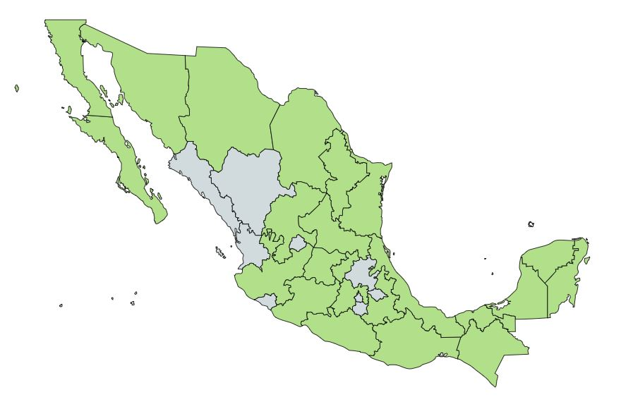

Descripcion:
Se trata de una planta perteneciente a la familia Lamiaceae, con enormes propiedades culinarias y medicinales, que se ha utilizado durante varios siglos como condimento y como remedio casero. Su tallo y sus hojas, bastante abundantes, están cubiertos de pequeños y finos pelos, de los que se puede extraer un aceite esencial. Sus hojas desprenden un olor muy particular, y suelen utilizarse dejarse secar para luego elaborar aceites, infusiones y para sazonar preparaciones.
Usos Medicinales:
Bueno para el sistema digestivo
El orégano también se considera un tónica y cuenta con una propiedad digestiva. En la medicina natural austriaca se utiliza la infusión del orégano para el tratamiento de trastornos en el tracto gastrointestinal.Para tratar catarros y dolores de garganta
Para aliviar los síntomas de los resfriados y catarros, prepárate una infusión con hojas de orégano. Pon una cucharadita de hojas secas de orégano en una taza, agrega agua caliente, tapa y deja reposar 3 minutos. Después cuela y bebe cuando se temple. En general, el orégano es una planta medicinal muy beneficiosa para afecciones del aparato respiratorio debido a su efecto antiinflamatorio, analgésico y antiséptico.Antiinflamatorio
El orégano tiene un gran poder antiinflamatorio. Científicos de la Universidad de Bonn (Alemania), y la ETH de Zurich (Suiza), identificaron un ingrediente activo en el orégano, conocido como beta-cariofilina (E-BCP), que puede ser útil contra trastornos como la osteoporosis y la arteriosclerosis.Antioxidante
Debido a la gran cantidad de ácidos fenólicos y flavonoides que tiene. También se cree que tiene una gran cantidad de poder para eliminar los virus que pueden venir a través del contagio de los alimentos. El principio activo que tiene el orégano es el flavonol retusin, y sus aceites se destacan por tener monoterpenoides y monoterpenos.Contra-indicaciones:
Si bien es cierto que se trata de una hierba sumamente beneficiosa, existen también algunas contraindicaciones y efectos secundarios asociados al consumo de orégano, aunque estos suelen ser bastante ligeros y muy poco tóxicos. Sin embargo, es necesario moderar su consumo en mujeres embarazadas y en periodo de lactancia, así como en niños, pues su concentración puede llegar a provocar reacciones adversas. Por tanto, se recomienda consultar con un especialista antes de administrar esta hierba, ya sea ingerida o en su versión tópica.
